温泉と城下町、海の絶景を一度に。
松山空港でレンタカーを受け取り、初日は松山市内と道後温泉へ。2日目は今治からしまなみ海道を走り、大島・大三島方面へ。3日目は松山城周辺や市内グルメを楽しみ、空港へ戻ります。
道後温泉でくつろぎ、松山の歴史と瀬戸内海の島景色へ。鯛めし、じゃこ天、みかんスイーツも楽しむ2泊3日です。
松山空港でレンタカーを受け取り、初日は松山市内と道後温泉へ。2日目は今治からしまなみ海道を走り、大島・大三島方面へ。3日目は松山城周辺や市内グルメを楽しみ、空港へ戻ります。
温泉街、城下町、瀬戸内海の橋景色、海辺の駅をめぐります。
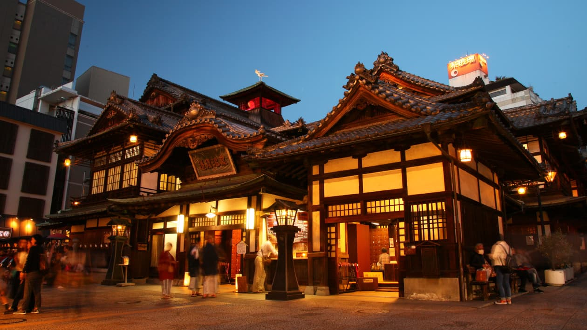
歴史ある温泉建築と商店街を楽しめる、松山を代表する観光地です。
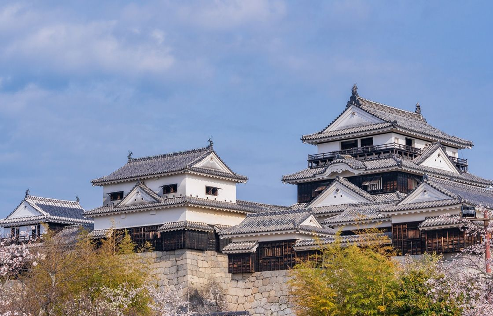
城下町を見渡す天守と石垣が印象的な、松山の歴史を感じる場所です。
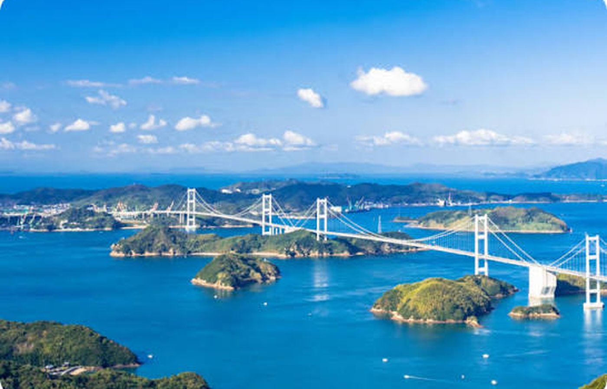
瀬戸内海の島々と橋が連なる、愛媛を代表するドライブコースです。
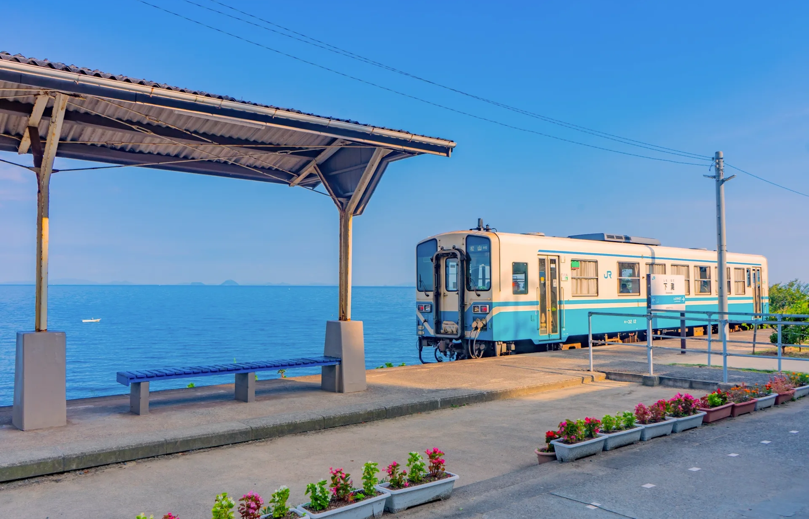
ホームの向こうに瀬戸内海が広がる、愛媛らしい海辺の風景です。
鯛、じゃこ天、柑橘、八幡浜や今治のご当地グルメを味わいます。
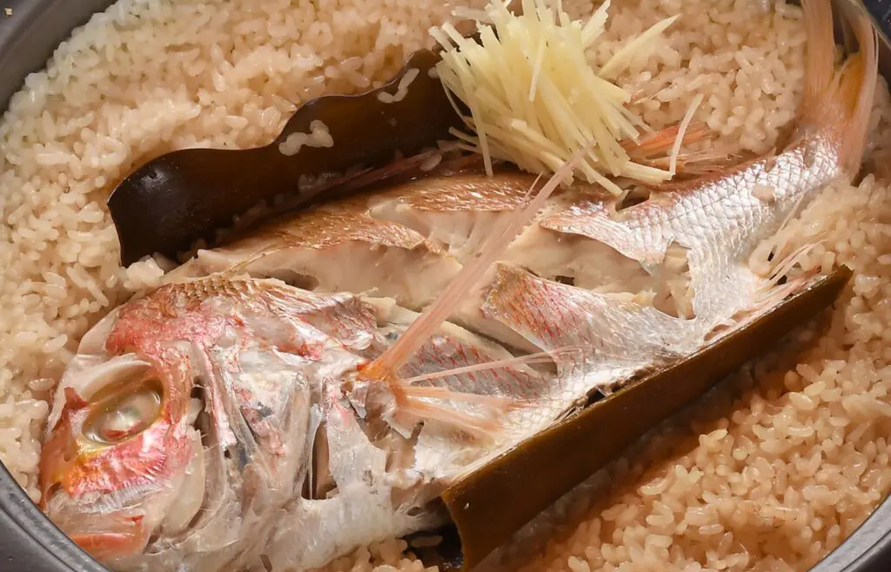
鯛の旨みを米に炊き込んだ、愛媛を代表する郷土料理です。
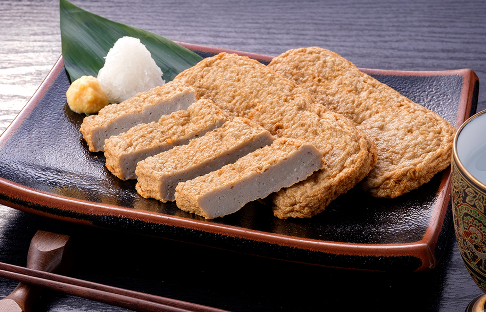
小魚の風味を楽しめる、食べ歩きやおつまみにも合う愛媛の名物です。
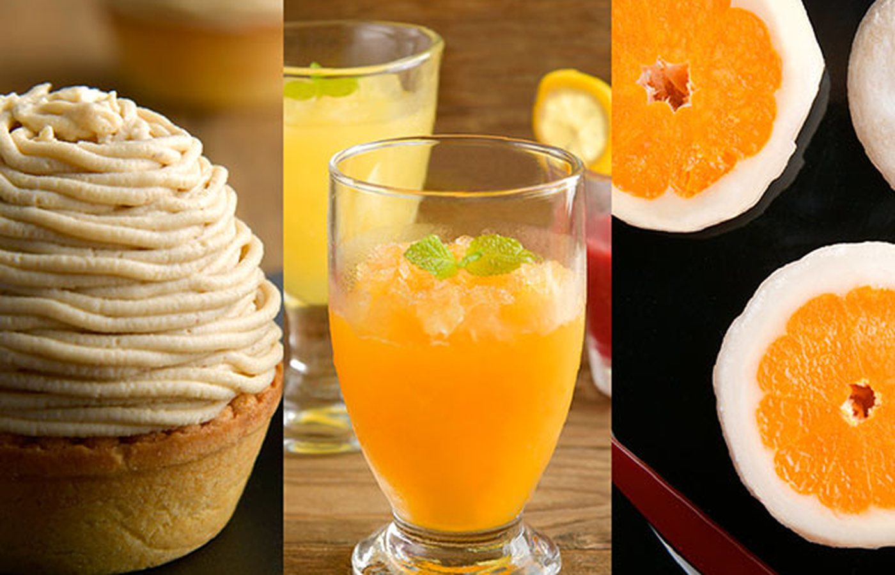
柑橘を使ったモンブラン、ジュース、大福など、愛媛らしい甘味を楽しみます。
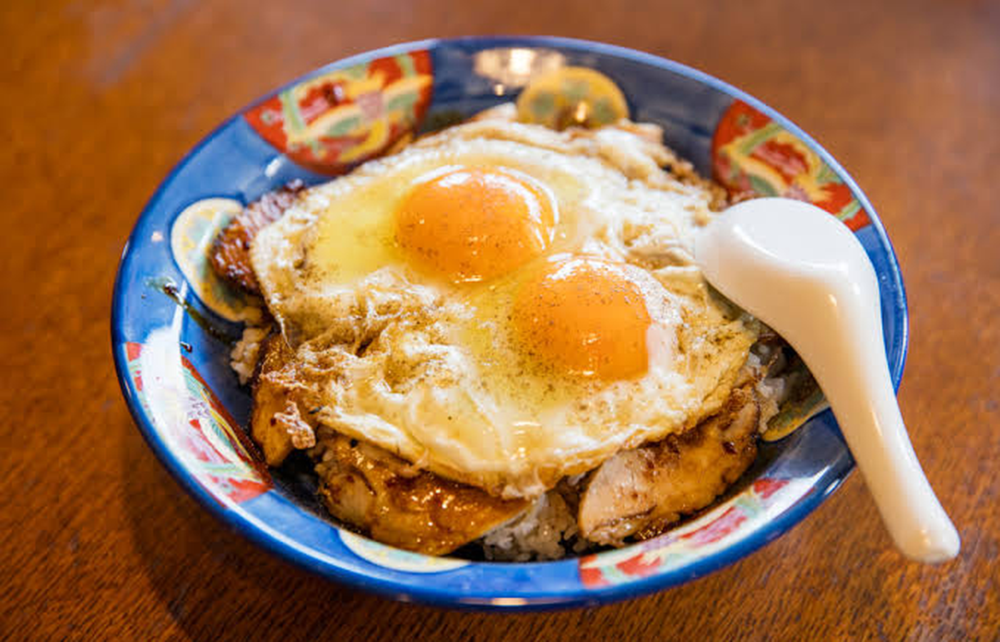
ご飯に焼豚と目玉焼きをのせ、甘辛いたれで味わう今治のご当地グルメです。
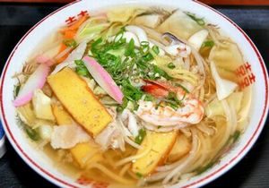
魚介の風味を生かしたあっさりスープで味わう、八幡浜のご当地麺です。
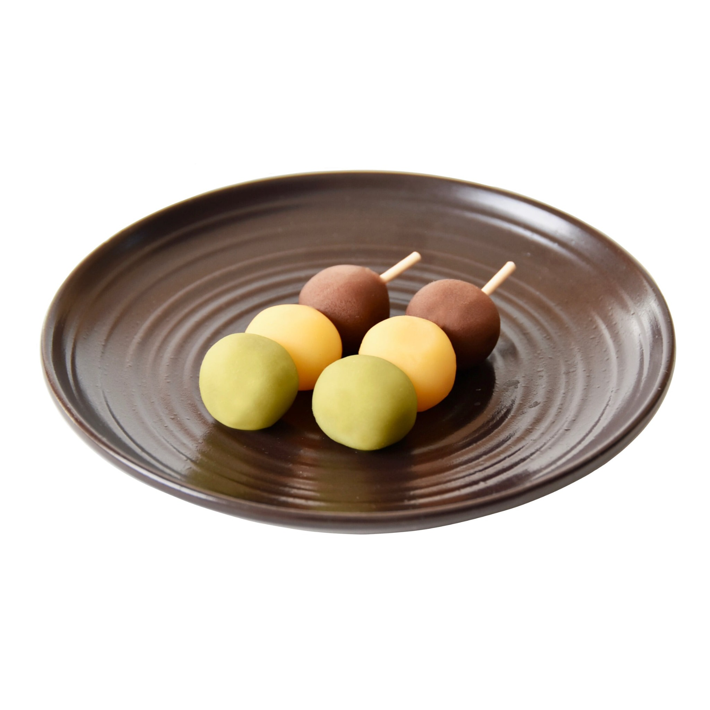
抹茶・卵・小豆の三色餡で包んだ、道後温泉や松山を代表する銘菓です。
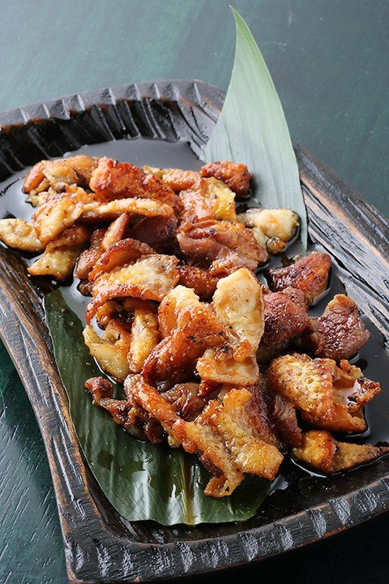
串に刺さず、鉄板で押し焼きにして仕上げる今治独自の焼き鳥です。
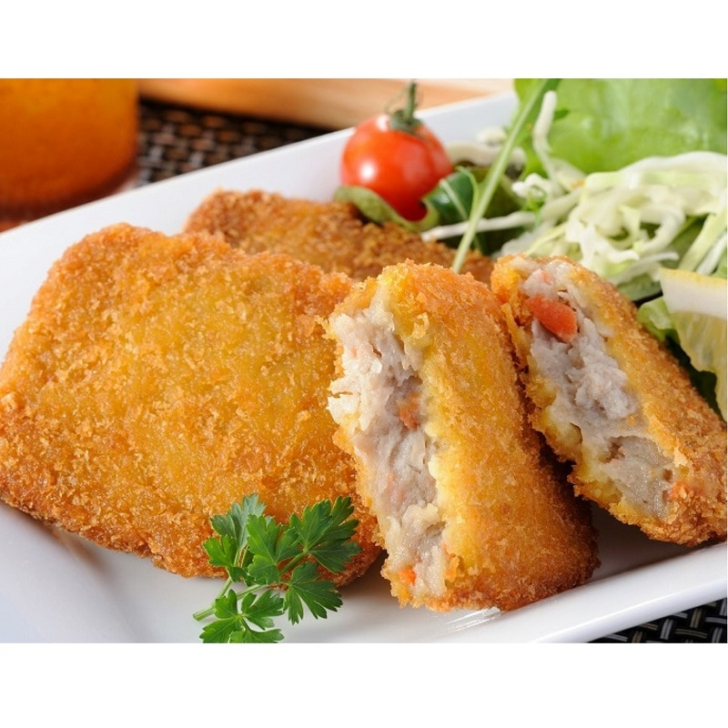
小魚のすり身と野菜を衣で包んで揚げた、愛媛らしい食べ歩きグルメです。
4月中旬〜下旬は、しまなみ海道の島々に新緑が広がり、ドライブに向く時期です。道後温泉や松山市内は日中過ごしやすい一方、橋上や海辺では風が強い場合があります。
松山、道後温泉、しまなみ海道をつなぎ、景色と名物料理を各日に組み込みます。
松山空港でレンタカーを受け取り、松山城へ。市街地を見渡した後、道後温泉本館と商店街を訪れ、鯛めしやみかんスイーツを楽しみます。
今治方面へ向かい、しまなみ海道から瀬戸内海と島々を眺めます。昼食には今治焼豚玉子飯を選び、橋や海辺の景色を巡ります。
下灘駅で瀬戸内海の風景を楽しみ、じゃこ天や柑橘のお土産を選んで松山空港へ戻ります。
松山空港からJR松山駅は車で約15分、道後温泉は約40分が公式案内の目安です。